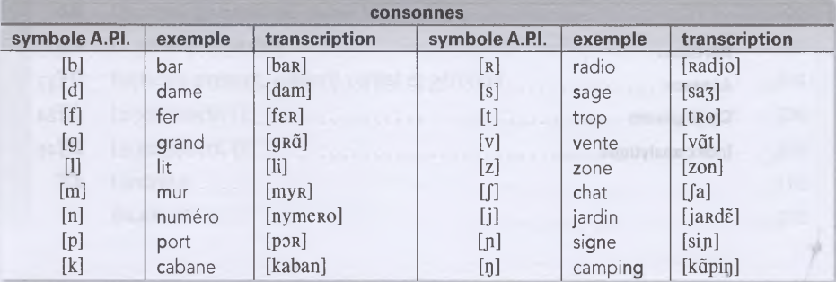

L'alphabet français est constitué de
26 lettres,
6 voyelles et 20 consonnes.
الحروف الابجدية الفرنسية تحتوى على 26 حرف منهم 6 حروف متحركة و 20 ساكنة.
استمع للحروف الابجدية وردد مع الصوت:
| Aa | Bb | Ce |
| Dd | Ee | Ff |
| Gg | Hh | Ii |
| Jj | Kk | Mm |
| Nn | Oo | Pp |
| Rr | Ss | |
| Tt | Uu | Vv |
| Ww | Xx | Y |
| Zz |
Les lettres de l'alphabet sont de genre masculin.
الحروف الابجدية الفرنسية مذكرة، مثال:
Le mot mystère s'écrit avec un y.
un y
Nommer chaque lettre d'un mot se dit épeler.
لذكر حروف الكلمه نستخدم الفعل يتهجى:épeler
Vous pouvez épeler, s'il vous plaît ?
ممكن تتهجى من فضلك؟
Accès s'écrit avec deux c et un è accent grave.
هذه الكلمة تكتب هكذا:deux c et un è accent grave
L'alphabet phonétique international
الابجدية الصوتية العالمية:
L’alphabet phonétique
international est composé d'une série de symboles qui indiquent les sons
(phonèmes) de chaque langue.
الابجدية الصوتية العالمية مكونة من سلسلة من الرموز التى توضح الاصوات لكل لغة
Ces symboles sont inscrits de manière conventionnelle entre crochets[].
هذه الرموز منقوشة بشكل تقليدي بين قوسين مربعين
استمع للرموز الصوتية وتعود عليها لكى تتقن نطق اللغة الفرنسية: اولا اصوات voyelles, semi-voyelle:
ثانيا الاصوات consonnes
Exercices
Écoutez et écrivez les lettres de l’alphabet que vous entendez.Écoutez et écrivez les mots que vous entendez.
Écoutez et cochez le mot que vous entendez.